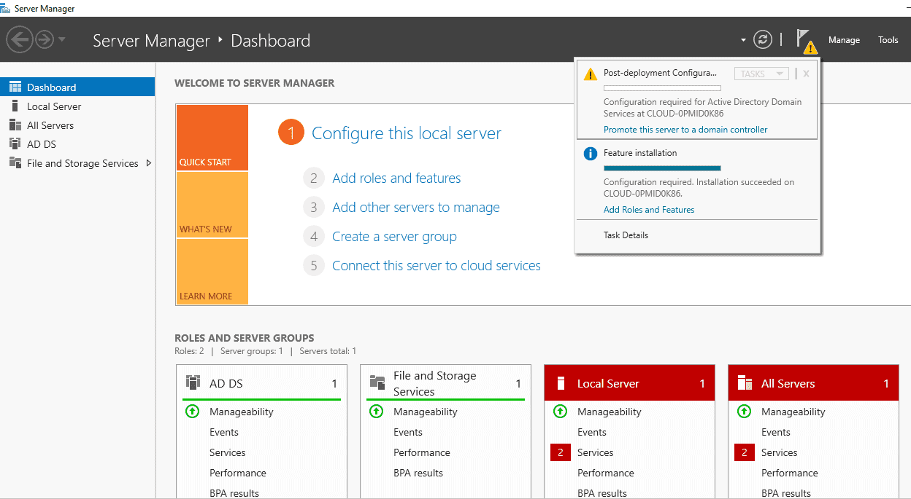
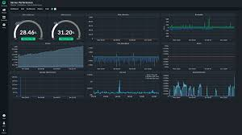

Windows Server Management
Our team provides expert management of your Windows Server infrastructure, ensuring seamless operations and enhanced performance for your business.
Key Services Include:

Active Directory Setup and Management
Expert setup and ongoing management of Active Directory for user and resource management.
Server Backup and Recovery Solutions
Reliable backup and recovery solutions to protect your data and ensure business continuity.

System Monitoring and Performance Optimization
Continuous monitoring and performance tuning of your servers for optimal operation.
Security Patch Management and Compliance
Regular patch management and compliance checks to maintain security and compliance standards.